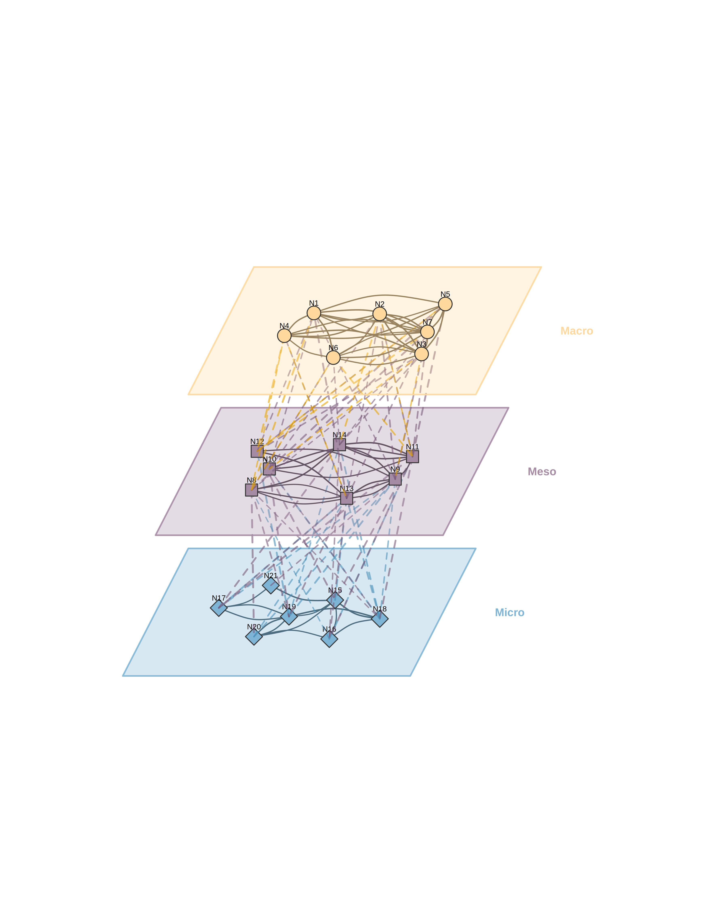

cograph is a modern R package for network visualization. It renders publication-ready network plots from adjacency matrices, edge lists, igraph, statnet network, qgraph, or tna objects using a pipe-friendly API with full control over nodes, edges, layouts, and themes.
Key features:
-
Base R and grid rendering via
splot()andsoplot() -
Pipe-friendly API:
cograph() |> sn_nodes() |> sn_edges() |> sn_theme() - 12+ node shapes including pie charts and donut rings
- 7 built-in themes and multiple color palettes
- Confidence interval underlays, edge label templates, weight scaling
-
Converters for
tnaandqgraphobjects
Installation
# Install from CRAN (when available)
#install.packages("cograph")
# Or install the development version from GitHub
# install.packages("devtools")
#devtools::install_github("sonsoleslp/cograph")
Simple network plotting
# 10-node directed transition matrix (TNA-style)
set.seed(42)
states <- c("Explore", "Plan", "Monitor", "Evaluate", "Adapt",
"Reflect", "Regulate", "Execute", "Collaborate", "Review")
mat <- matrix(runif(100, 0, 0.3), nrow = 10, dimnames = list(states, states))
diag(mat) <- 0
mat <- mat / rowSums(mat) # row-normalizeLayouts
# Built-in layouts
splot(mat)
splot(mat, layout = "circle")
# igraph layout codes
splot(mat, layout = "kk") # Kamada-Kawai
splot(mat, layout = "fr") # Fruchterman-Reingold
cograph supports statistical edge visualization with CI underlays and significance notation.
# Publication-ready with CI underlays and labels
splot(mat,
edge_ci = runif(sum(mat > 0), 0.05, 0.2), layout = "oval",
edge_label_template = "{est}{stars}",
edge_label_p = runif(sum(mat > 0), 0, 0.1),
edge_label_stars = TRUE, edge_label_bg = "transparent", edge_label_color = "maroon",
edge_label_size = 0.5, edge_label_position = 0.6
)
Template placeholders: {est}, {low}, {up}, {range}, {p}, stars
Pie Chart Nodes and shapes
set.seed(1)
# Each node gets a vector of pie segment values
pie_vals <- lapply(1:10, function(i) runif(4))
pie_cols <- c("#E41A1C", "#377EB8", "#4DAF4A", "#FF7F00")
splot(mat,
node_shape = "pie",
pie_values = pie_vals,
pie_colors = pie_cols, node_size = 10,
layout = "circle"
)
# Per-node color palettes
pie_cols_multi <- list(
c("#E63946", "#F1FAEE", "#A8DADC"),
c("#264653", "#2A9D8F", "#E9C46A"),
c("#F72585", "#7209B7", "#3A0CA3"),
c("#003049", "#D62828", "#F77F00"),
c("#606C38", "#283618", "#DDA15E"),
c("#0077B6", "#00B4D8", "#90E0EF"),
c("#9B2226", "#AE2012", "#BB3E03"),
c("#023047", "#219EBC", "#8ECAE6"),
c("#5F0F40", "#9A031E", "#FB8B24"),
c("#2D00F7", "#6A00F4", "#8900F2")
)
splot(mat,
node_shape = "pie",
pie_values = lapply(1:10, function(i) runif(3)),
pie_colors = pie_cols_multi,
node_size = 10,
layout = "circle"
)
Donut Nodes
fills <- runif(10, 0.3, 0.95)
# Per-node donut color palettes
donut_cols_multi <- list(
c("#003049", "#D62828", "#F77F00", "#FCBF49"),
c("#606C38", "#283618", "#DDA15E", "#BC6C25"),
c("#0077B6", "#00B4D8", "#90E0EF", "#CAF0F8"),
c("#9B2226", "#AE2012", "#BB3E03", "#CA6702"),
c("#5F0F40", "#9A031E", "#FB8B24", "#E36414"),
c("#023047", "#219EBC", "#8ECAE6", "#FFB703"),
c("#264653", "#2A9D8F", "#E9C46A", "#F4A261"),
c("#F72585", "#B5179E", "#7209B7", "#560BAD"),
c("#10002B", "#240046", "#3C096C", "#5A189A"),
c("#D8F3DC", "#B7E4C7", "#95D5B2", "#74C69D")
)
splot(mat,
donut_values = lapply(1:10, function(i) runif(4)),
donut_colors = donut_cols_multi,
donut_inner_ratio = 0.55,
node_size = 8
)
# Donut + Pie combo: outer donut ring with inner pie segments
splot(mat,
node_shape = "donut",
donut_fill = fills,
donut_shape = c("circle", "hexagon", "square", "diamond", "triangle",
"pentagon", "circle", "hexagon", "square", "diamond"),
donut_color = palette_viridis(10)
)
plot_htna() - Heterogeneous Multi-Group Networks
plot_htna() creates multi-group network layouts where node groups are arranged in geometric patterns (bipartite, triangle, rectangle, polygon, or circular).
layout(t(1:2)); par(mar=c(0,0,0,0))
# Create network with 3 groups
set.seed(42)
nodes <- paste0("N", 1:15)
m <- matrix(runif(225, 0, 0.3), 15, 15)
diag(m) <- 0
colnames(m) <- rownames(m) <- nodes
node_types <- list(
Teacher = paste0("N", 1:5),
Student = paste0("N", 6:10),
System = paste0("N", 11:15)
)
# Polygon layout (triangle for 3 groups)
plot_htna(m, node_types, layout = "polygon", minimum = 0.15)
# Circular layout (groups as arcs)
plot_htna(m, node_types, layout = "circular", minimum = 0.15)
plot_mtna() - Multi-Cluster Networks
plot_mtna() visualizes multiple network clusters with summary edges between clusters and individual edges within clusters. Each cluster is displayed as a shape (circle, square, diamond, triangle) containing its nodes.
par(mar=c(0,0,0,0))
# Create network with 6 clusters
set.seed(42)
nodes <- paste0("N", 1:30)
m <- matrix(runif(900, 0, 0.3), 30, 30)
diag(m) <- 0
colnames(m) <- rownames(m) <- nodes
clusters <- list(
Alpha = paste0("N", 1:5),
Beta = paste0("N", 6:10),
Gamma = paste0("N", 11:15),
Delta = paste0("N", 16:20),
Epsilon = paste0("N", 21:25),
Zeta = paste0("N", 26:30)
)
# Summary edges between clusters + individual edges within
plot_mtna(m, clusters)
Key parameters: * spacing: Distance between cluster centers * shape_size: Size of cluster shells * node_spacing: Node placement within shapes (0-1) * shapes: Vector of shapes per cluster (“circle”, “square”, “diamond”, “triangle”) * summary_edges: Show aggregated between-cluster edges (default TRUE) * within_edges: Show individual within-cluster edges (default TRUE)
Alias:
mtna()is available as a shorthand forplot_mtna().
plot_mlna() - Multilevel 3D Networks
plot_mlna() visualizes multilevel/multiplex networks where multiple layers are stacked in a 3D perspective view. Each layer contains nodes connected by solid edges (within-layer), while dashed lines connect nodes between adjacent layers (inter-layer edges).
par(mar=c(0,0,0,0))
# Create multilevel network
set.seed(42)
nodes <- paste0("N", 1:21)
m <- matrix(runif(441, 0, 0.3), 21, 21)
diag(m) <- 0
colnames(m) <- rownames(m) <- nodes
# Define 3 layers
layers <- list(
Macro = paste0("N", 1:7),
Meso = paste0("N", 8:14),
Micro = paste0("N", 15:21)
)
# Basic usage with spring layout
plot_mlna(m, layers, layout = "spring", minimum = 0.18, legend = FALSE)
License
MIT License. See LICENSE.md for details.